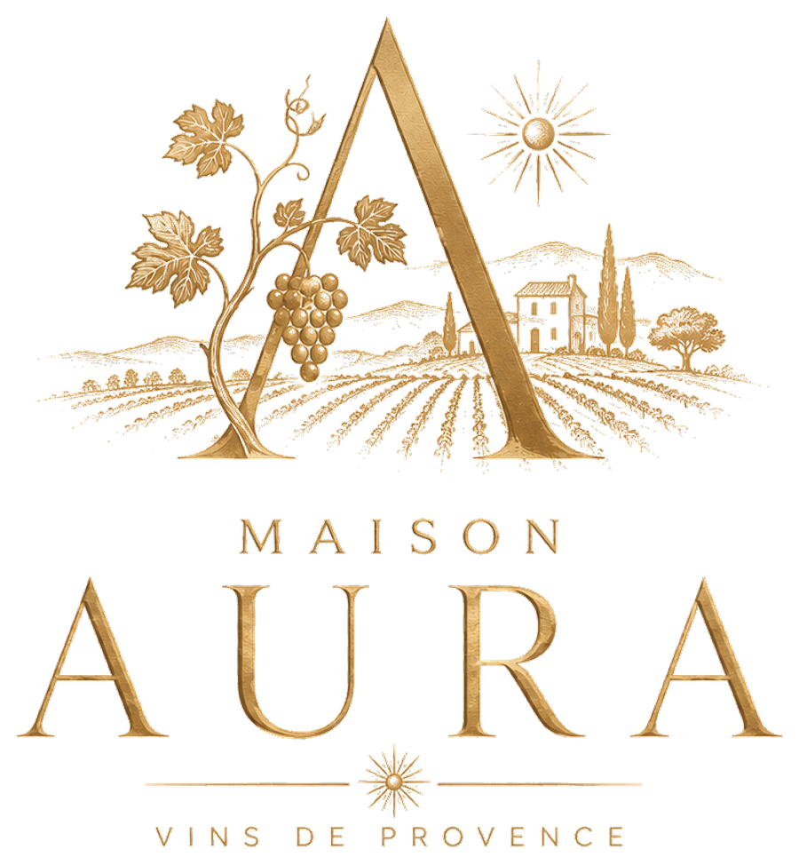
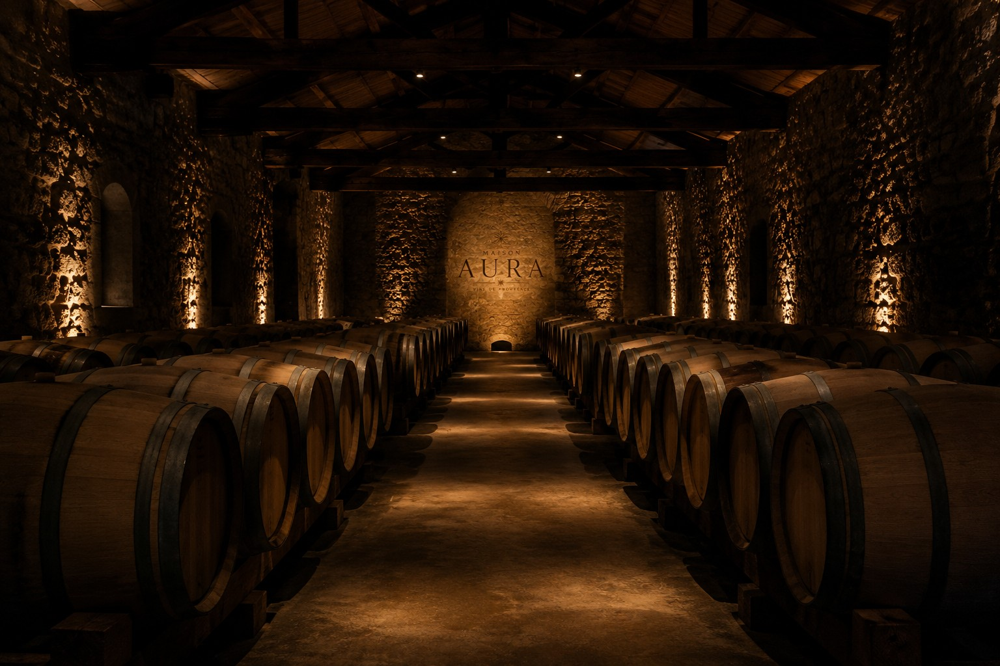
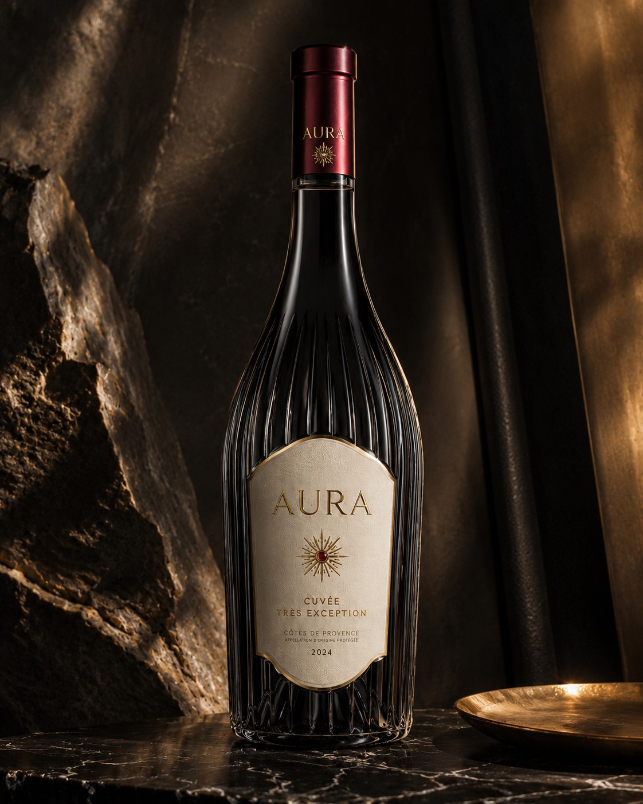
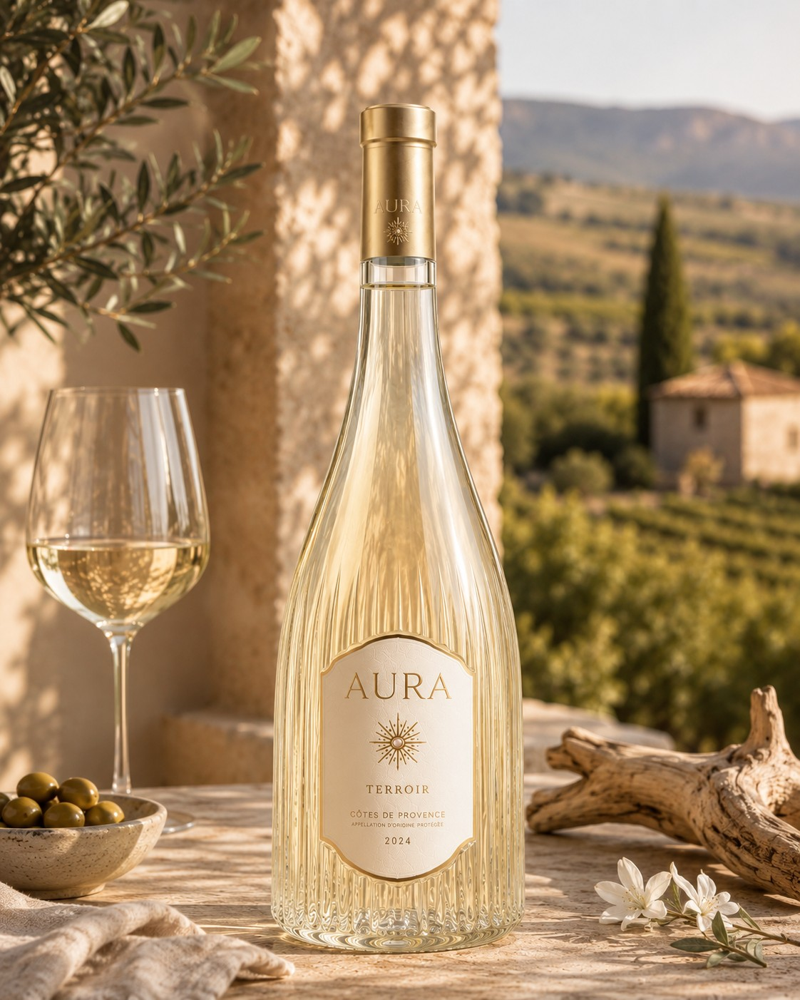
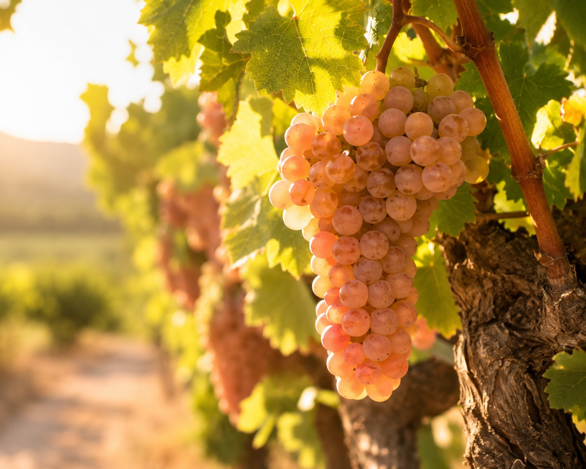

01 — The Cellar
Cellar Tour
An hour and a half in the estate's vaulted cellars, among the foudres and barrels, following the wine from vat to bottle. A tasting of three cuvées to close the visit.
This site presents alcoholic beverages. Please confirm your date of birth to continue.
Excessive alcohol consumption is dangerous for your health — please drink responsibly. Under French law, the sale of alcohol to minors is prohibited.


The estate isn't visited like a museum. It's discovered in small groups, at the pace of the cellar, the vine, and the table.
MAISON AURA does not organise group tours. Every experience takes place in a small setting, often guided by a family member or by the head of cultivation himself. It isn't a scheduling constraint — it's a way of hosting that has never changed.
An hour and a half in the estate's vaulted cellars, among the foudres and barrels, following the wine from vat to bottle. A tasting of three cuvées to close the visit.

Several vintages of AURA TRÈS, opened side by side, to trace how a single plot evolves over time. An experience reserved for knowledgeable enthusiasts, in a very small group.

A lunch or dinner built around our three ranges, each dish designed to answer a specific wine. The house sommelier comments on every pairing, glass in hand.

A morning in the rows, alongside the estate's team, at the precise moment of harvest — a short window that varies from year to year. Lunch at the estate to close the morning.
A single e-mail is enough: tell us which experience interests you, how many people, and a rough timeframe.
We get back to you within 48 hours to refine the date and format, and to answer any particular questions — allergies, a special occasion, the language of the visit.
Once the date is set, a written confirmation is sent with all the practical details — access, parking, suggested attire.
Let us know the experience you'd like, the number of people, and your availability — we reply personally within 48 hours.
Contact Us